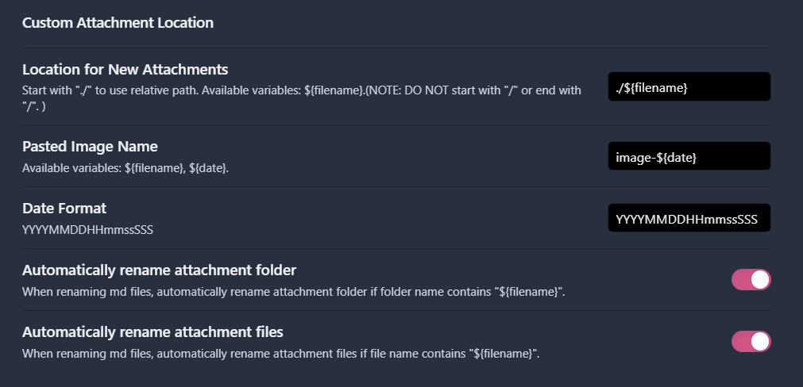
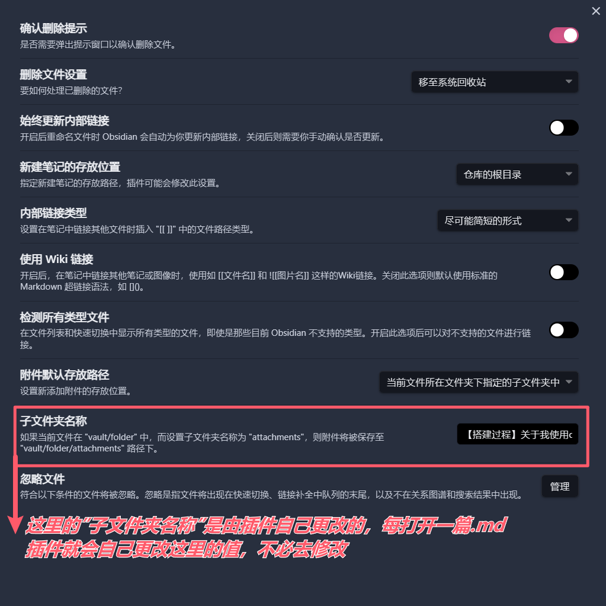
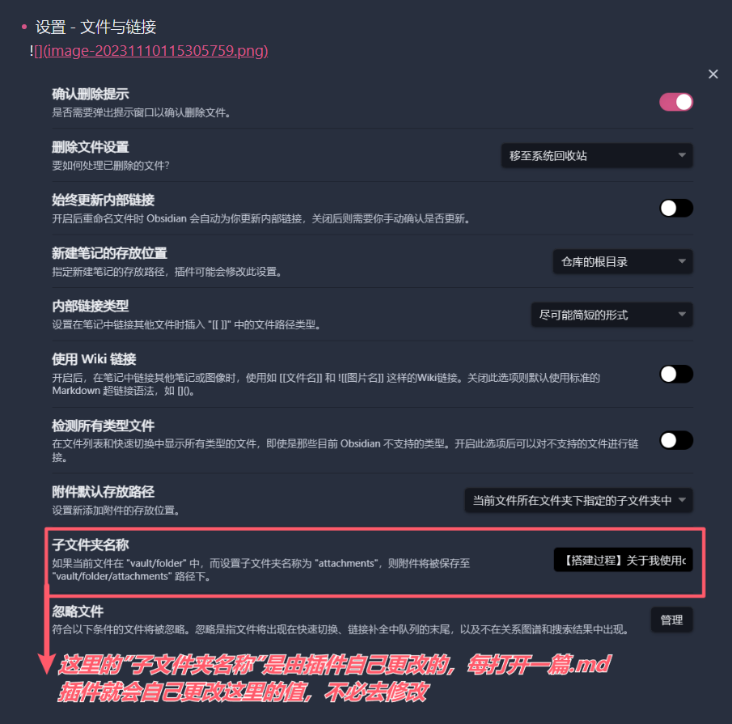
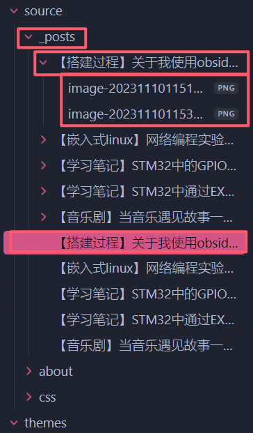

关于我使用obsidian加hexo部署个人博客的过程
本文最后更新于：8 个月前
1 前言
从很早之前就一直希望搭建一个属于自己的博客。不管是折腾各种有趣项目还是在看完了那些精彩的文学作品，总觉得没有留下一点什么，实在是可惜。发空间或者朋友圈这样的形式，实在不足以记录当时的心情，向有文章区的社交网站投稿文章，又显得不大合适。
兜兜转转，还是下定决心搭建一个属于自己的个人博客。一来是个人博客的形式更适合自己，在自己的站点碎碎念，不必考虑文章是否合乎投稿社群氛围；二来是近年来，随着输入的增加，愈发感觉到自己语言的贫乏，对于能够流畅行文、顺畅表达出自己想法的人愈发羡慕。因此，希望能够锻炼一点自己表达的能力，也是我搭建个人博客的一个契机。
本次过程记录，将会尽可能详尽地记录整个搭建过程，对于同样想要搭建一个属于自己的 “赛博小窝“ 的读者，希望这篇拙笔能够帮上你一点忙。
值得一提的是，本站点搭建方法以及使用的工作流，只是笔者在尝试了各类方法后，觉得最适合自己的方法，每个人最好的工作流，终归是最适合自己的工作流，希望拙笔能够为你寻找最佳工作流的路上提供一点参考
2 搭建方案
笔者搭建环境：
- 本地站点搭建在：
Windows 11 专业版 21H2 22000.2538 - 终端工具：
Powershell - 各种.yml文件或.ejs文件编辑器：
VS Code
博客站点框架使用 Hexo 搭建，主题使用 Fluid ，以下是 Hexo 与 Fluid 的官方文档：
静态网站托管服务使用 Github Pages ，github的这个服务是免费的，因此很多个人博客都会使用这个服务，并且免去了各种意义上的麻烦，包括穷的麻烦。 以下是 Github Pages 的官方文档：
写作工具使用 Obsidian，因为在之前就有使用Obsidian进行做笔记的习惯，比较顺手且好用，由于插件的支持以及其强大的拓展性，所以对于后面搭建的工作流有较好的适配性。更好的是，这个软件除了发布和云盘等内容，都是免费的。 以下是 Obsidian 的官方文档：
依附于上述三个部分的若干插件将在后面的叙述中记录。
3 工作流与写作过程
3.1 站点框架
3.1.1 Hexo
对于对前端不熟的我来说，像Hexo这样的框架是再适合不过了。使用Hexo的时候不需要关心网站中的各个组件的代码是如何编写的，在搭建好框架之后我只需要撰写markdown文件就可以生成网页了。
3.1.1.1 安装依赖
Hexo有两个前置依赖：
- Node.js
- Git
Node.js 是一个可以执行 JavaScript 代码的软件程序。更准确地说，Node.js 是一个 JavaScript 运行环境。它是一个开发环境，可以将 JavaScript 代码用于服务器端脚本。
Git 是一个开源的分布式版本控制系统，用于敏捷高效地处理任何或小或大的项目。
对于这两个东西的安装，可以参考Hexo官网的步骤：
Git的安装
Node.js的安装
指北：
如果已习惯类似chocolatey这样的包管理工具，可以参考Hexo官网 [安装 Node.js] 一节中 [其他的安装方法] 看了一眼，貌似支持winget、chocolatey等。
3.1.1.2 安装Hexo并本地启动
安装完git和node之后就可以使用npm安装Hexo了
1 | |
开始创建一个项目 my-blog
请注意！下面这个命令行的指令中使用了 cd my-blog 这意味着往后的终端指令都在./my-blog路径下执行，并且在以后想要发布网页的时候也需要在该文件夹下执行指令。
1 | |
生成网页文件后本地启动
1 | |
浏览器访问命令行中提示的网站http://localhost:4000/可以看到在本机的4000端口Hexo已经生成了一个示例网站了。
3.1.1.3 更换主题
以本站使用的Fluid主题为例：
1 | |
后面关于Fluid的各种配置请参考 Hexo官方文档的这个小节往后 执行。
当执行完上述操作之后，完成了主题的配置，可以执行下述指令，查看效果
1 | |
再次访问http://localhost:4000/，应该设置已经生效了。
3.1.1.4 工作流设置
正如前面所说，笔者使用的是 Obsidian 写的博客，而在实践的过程中比较麻烦的是这个图片的插入方法。以前写过的两篇博客都是用Github开了一个仓库之后利用Picgo这个小工具实现的图床的，但是在现在这种场景下插入图片并不优雅，因为每次的插入图片我都需要完成以下操作：
- 截图，复制到剪切板中
- 打开Picgo，上传文件到github中
- 复制md格式的图片链接
- 回到obsidian中粘贴这个链接
太麻烦了！因为之前在obsidian里面插入图片，只需要在图片在剪贴板中的时候直接回到obsidian里面 ctrl + v ，obsidian就会自动将这个文件上传到指定的文件夹下，并且自动在粘贴处插入obsidian支持显示图片的链接。
因此在实践hexo撰写博客的过程中，我利用了obsidian原生支持的这种工作流程，下面介绍一下具体实现，和使用到的插件：
3.1.1.4.1 obsidian设置
如果您还没有了解过obsidian，请参考这几篇博客，此处碍于篇幅就不展开obsidian的使用：
实际上，可以把他就当成一个编辑器使用就好，需要用到什么功能的时候，可以去查有没有插件已经实现了你的想法
为了能够让obsidian粘贴图片的时候改变上传图片的路径，并且自定义所插入的图片markdown链接，我们需要用到一个插件：Custom Attachment Location
此处安装方法可以参考这位的博客：
笔者自己的设置格式为
./${filename}为的是和后面hexo那边的设置相匹配，以完成hexo和obsidian的连续自动化
设置完成之后obsidian的相关设置应该长这样：
- 设置 - 第三方插件设置 - Custom Attachment Location
 - 设置 - 文件与链接

这样设置完了之后，在后面用obsidian编写博客直接粘贴图片到编辑区后，就会在与当前笔记同级的同名子文件夹中保存图片，并且在正文中插入后面Hexo那边也可以识别的markdown图片链接，效果如下：


3.1.1.4.2 Hexo端设置
修改 _config.yml 文件中的这个选项，这样可以生成一个同名的资源目录，用于存放同名文章使用的资产。
1 | |
3.1.1.4.3 创建文章
当你要开始写一篇文章的时候，在命令行中输入：
1 | |
就会在 ./my-blog/source/_posts/ 路径下新建 <文章名>.md 文件和同名资产文件夹，然后直接在obsidian中选择打开 ./source 文件夹后选择刚刚生成的md文件就可以开始愉快写作了！
3.2 发布！
在Github中注册账号，然后创建一个仓库，配置Github Pages：创建仓库的时候，仓库名请务必填 <你的github名>.github.io ，不然的话Github不会将该仓库认作Github Pages。
在 <你的github名>.github.io 仓库对应的 GitHub Pages 设置页面 (访问路径为 Settings -> Pages ) 可以找到个人博客的主页访问地址：https://<GitHub 用户名>.github.io。
回到hexo这边，首先安装 hexo-deployer-git ：
1 | |
修改 _config.yml 文件：
1 | |
配置好了之后可以就可以在终端生成站点文件后推送到这个仓库，然后外网用户就可以在你的博客地址中访问你的博客了：
1 | |
3.3 配置完之后的工作流
- 使用new指令新建一篇博客：
1 | |
- 打开obsidian开始写作，此时粘贴图片可以直接插入
- 写作完了之后，终端本地预览：
1 | |
- 预览没问题之后，发布：
1 | |
4 结语
利用obsidian结合hexo来写作自己的博客还有很多优点，除了插入图片比较舒心之外，yml的标签甚至奇妙地兼容了，obsidian里面添加文章首部的tag的时候界面适配也很好看，除此之外，就像typora一样的实时预览也是非常棒的功能。
本文并未展开关于博客站点的其他装修操作，关于Fluid主题的更加详细的配置，请参考 此处 官方十分详尽的文档。
感谢阅读！